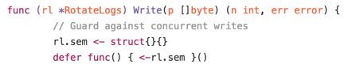
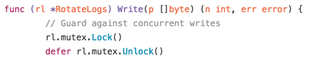
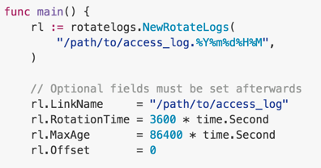
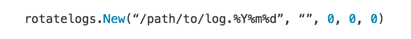
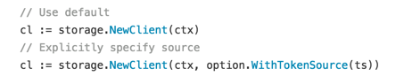
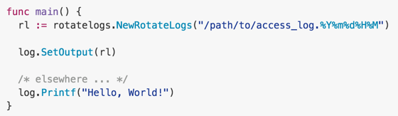
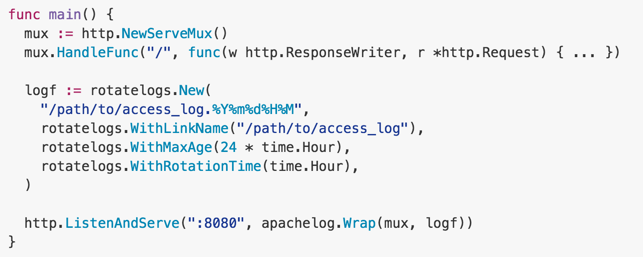

WTF Was Wrong With My Go Code, Part 2
WTF Was Wrong With My Go Code, Part 2
So apparently rakyll received a copy of the book that I co-authored with my fellow Japanese gophers. Feels weird to see our book written entirely in Japanese floating around in other parts of the World, but I’m very glad that people are expressing interest. Thank you for those who have purchased it :)
Onto the main topic.
Soon after I wrote my previous article, “WTF Was Wrong With My Go Code”, I noticed somebody referencing another one of my old Go libraries. …And, right. It was old, and it was bad. So I updated this one time again.
The Subject In Question
This time around the subject in question is a library that is used as a log destination, which also happens to be one of my earliest Go works. It was easy to tell it was old, as the .travis.yml file specified this library to be tested against Go 1.1 and 1.2 on Travis CI.
If you are new to running services, you tend to naively assume that your host server has unlimited disk space that allows you to log how much ever data you want to your log files. Those of us who have been in this field know better not to assume such things, and instead we *rotate* the logs.
You could use an external service for this, but there are cases where it’s just easier if the application that is emitting the log handle the log rotation — but it’s a very tedious job. This is where my go-file-rotatelogs package comes in.
But then again, the code was… not very Go-ish, or particularly good. Let’s see why.
Naming Things
Yes, just like my previous article, I yet again named things weirdly.
The package URL path does not match that of the actual package name.The constructor function includes the package name with it, making it feel very redundant. This was the same deal as my previous post, so I guess back then I thought this was the right way.
A Case For Mutexes
For whatever reason, I was using a semaphore via channels to limit accessibility to critical sections of my code. However, I was only allowing exactly one goroutine to have access to this section.

A sync.Mutex in Go can be thought of as a semaphore where the number of goroutines allowed is exactly one. And it’s ever so slightly more efficient than using channels to protect blocks of code. So I really don’t know why I used channels back then. I guess I was trying to be hip…
In this case, I just switched to using sync.RWMutex. Simple, and the way I did it, it saves me from writing an explicit initialization.

Hiding What’s Not Necessary
While tweaking the code, I also noticed many methods that were public APIs that just did not need to be public. For example, a method to generate the next file name to be used is not exactly something that an end user would need to access. All of these extra methods are now private.
One slight problem was that I had test code that relied on it, but I recently also tend to write my tests in the “foo_test” package to make sure I don’t unintentionally rely on some non-public parts of the API. The parts that were now private could not be tested in this scope. It’s easy to fix this, though: Just create another test file that has access to the internal parts, and run your private tests there. Simple.
Configurable Instance Variables
I come from the land of interpreted languages where words like “public”,”private”, and “protected” do not mean a thing. In that world, you can not really limit the visibility of any piece of data, except for sheer obfuscation.
So naturally I thought: well, if some parts of the RotateLogs object are optional/configurable, why not just expose them as public struct fields. For example, things like maximum age of a file before being deleted, or name of symlink to use were available as public fields.

At first glance, this may seem harmless if a bit awkward, but with Go you should always be thinking “Well, what if multiple goroutines tried to read/write to this field…? For example, in our case, what could happen if a goroutine changed the LinkName field (the name to use for symbolic links) was modified while we were calling os.Symlink…?
Recently my rules regarding this sort of thing is: If it doesn’t look like it needs to be updated by the end user, just keep fields private. This is obviously not a rule that has to be followed 100% of the time, but this is what I’m using when I’m in doubt. So in the new version, I have no public fields: everything is private.
Now that the important fields are private, it was now easy to use sync.Mutex objects where necessary to protect them from possible corruption.
Optional Parameters
However, this leaves one problem: So how exactly should users provide optional parameters? You cannot just ask them to assign them as they are all private.
One obvious way is to provide a constructor that can take all of those optional parameters. However, this leaves the end user having to specify really ugly constructor calls like this:

There are other ways to work around this problem, but one particular idiom that I like is the way Go code from Google Cloud Platform client libraries handle optional parameters. For example, below are the two ways to create a Google Storage client, one using the default OAuth token source, and the latter one to explicitly specify one yourself:

The trick is to receive the optional parameters as a variadic list of a generic interface. This allows you to specify as many of them as you want, or none at all.
I find this pattern very pleasant to the eye. There are definitely cases where this does not fit, but when it does, it’s beautiful.
You can now just create a RotateLog object with all default values like this, passing the only mandatory parameter:

Or you can specify the full set of optional parameters, or a subset thereof:

That’s it for now! I hope sharing my mistakes saves others from having to spend more time debugging. Enjoy, and happy hacking.